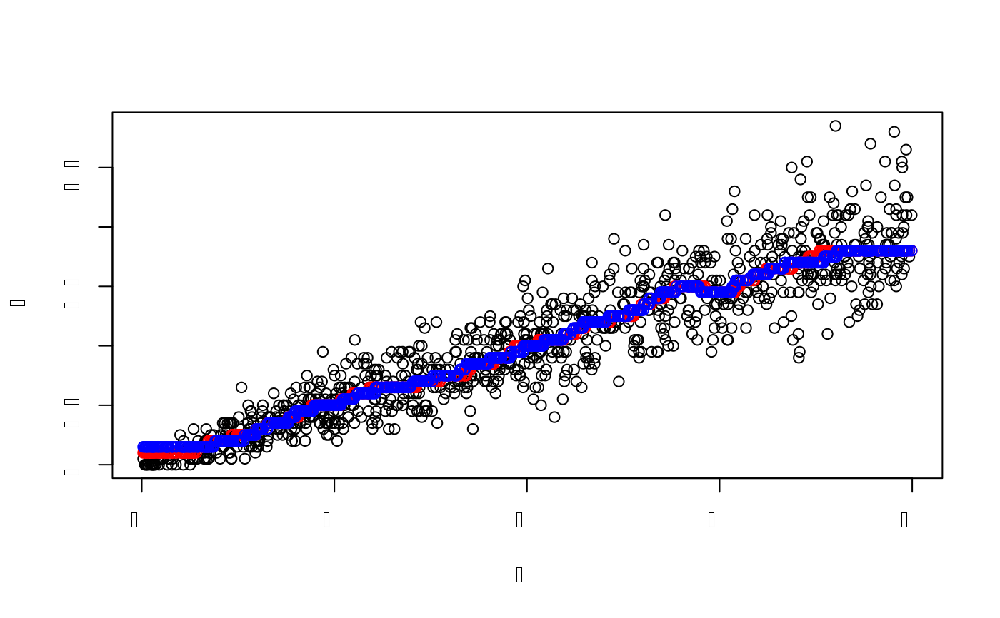

This function fits y based on x through a (weighted) median using
the npoints/2 neighborhood.
Arguments
- x, y
the x and y coordinates of the points.
- fraction, npoints
the fraction / number of the points that are considered for each fit.
npointsis the argument that is used in the end it is at least one. Default:fraction = 0.1andnpoints = length(x) * fraction.- weighted
a boolean that indicates if a weighted median is calculated.
- ignore_zeros
should the zeros be excluded from the fit
- sample_fraction
use a fraction of the data to estimate the local median. Useful for extremely large datasets where the trend is well-sampled
Details
This function is low-level implementation detail and should usually not be called by the user.
Examples
x <- runif(n = 1000, max = 4)
y <- rpois(n = 1000, lambda = x * 10)
plot(x, y)
#> Warning: No fonts detected on your system. Using an empty font.
fit <- loc_median_fit(x, y, fraction = 0.1)
fit2 <- loc_median_fit(x, y, fraction = 0.1, sample_fraction = 0.75)
points(x, fit, col = "red")
points(x, fit2, col = "blue")
